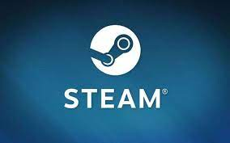

좋아하는 제작자에 대해
더 알아보기
각 게임의 상점 페이지에는 해당 게임을 제작하고 출시한 개발자와 배급사의 이름이 눈에 띄게 표시됩니다. 각 이름을 클릭하면 해당 개발자나 배급사의 다른 게임을 둘러볼 수 있습니다.
지난 출시작이나 시리즈의 다른 게임 보기
좋아하는 개발자 또는 배급사의 홈페이지를 둘러보고 관심이 가는 다른 제품이 있는지 찾아보세요. 여러 개의 타이틀을 보유한 제작자들은 시리즈 및 프랜차이즈를 다양한 방법으로 전시할 수 있으며, 베스트셀러 또는 최신 출시작을 중점적으로 보여줄 수도 있습니다.
신규 출시에 대한
이메일 받기
좋아하는 개발자나 배급사를 팔로우하고 다음 제품이 출시될 때 이메일 알림을 받으세요.
(언제든지 특정 이메일을 수신 거부할 수 있습니다.)